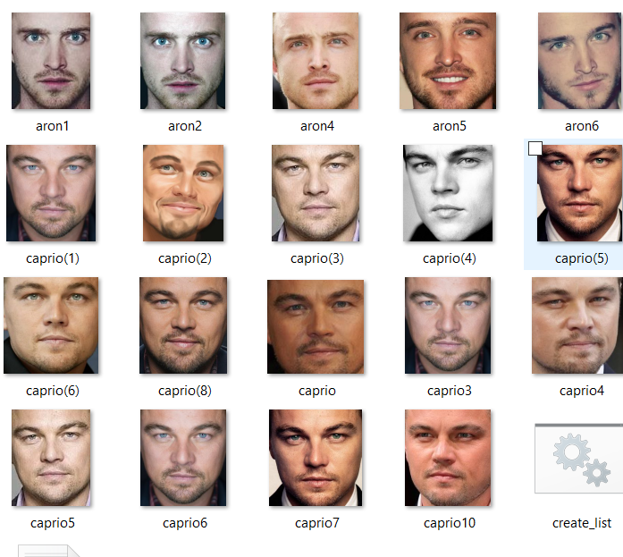

face_recognition
Projects are divided by several modules:
orb.py: Uses orb descriptor on image and filters keypoints using given window (selectKP)
face_recog.py: Using Haar Cascade, detect face. and provide window.Uses orb.py to find the keypoints in the face.
File_parser: using directories.txt, it loads the picture and returns an array
simple_approach.py : Using normalization, seperate,cluster,and ratio face function, it finds the distace between eyes and to the mouth region, and trains and predict with decision tree.
SAMPLE PICTURE

PERFORMANCE:
HIGH SCORE == CLASS
| File | ARON-SCORE | CAPRIO-SCORE | Mis-Classification |
|---|---|---|---|
| aron1.jpg | 0.375 | 0.625 | TRUE |
| aron2.jpg | 0.660377358491 | 0.339622641509 | |
| aron4.jpg | 0.611111111111 | 0.388888888889 | |
| aron5.jpg | 0.40243902439 | 0.59756097561 | TRUE |
| aron6.jpg | 0.614035087719 | 0.385964912281 | |
| caprio(1).jpg | 0.0698924731183 | 0.930107526882 | |
| caprio(2).jpg | 0.25 | 0.75 | |
| caprio(3).jpg | 0.833333333333 | 0.166666666667 | TRUE |
| caprio(4).jpg | 0.309523809524 | 0.690476190476 | |
| caprio(5).jpg | 0.286885245902 | 0.713114754098 | |
| caprio(6).jpg | 0.421686746988 | 0.578313253012 | |
| caprio(8).jpg | 0.227272727273 | 0.772727272727 | |
| caprio.jpg | 1.0 | 0.0 | TRUE |
| caprio10.jpg | 0.466666666667 | 0.533333333333 | |
| caprio3.jpg | 0.136842105263 | 0.863157894737 | |
| caprio4.jpg | 0.330188679245 | 0.669811320755 | |
| caprio5.jpg | 0.774193548387 | 0.225806451613 | TRUE |
| caprio6.jpg | 0.13829787234 | 0.86170212766 | |
| caprio7.jpg | 0.253623188406 | 0.746376811594 |